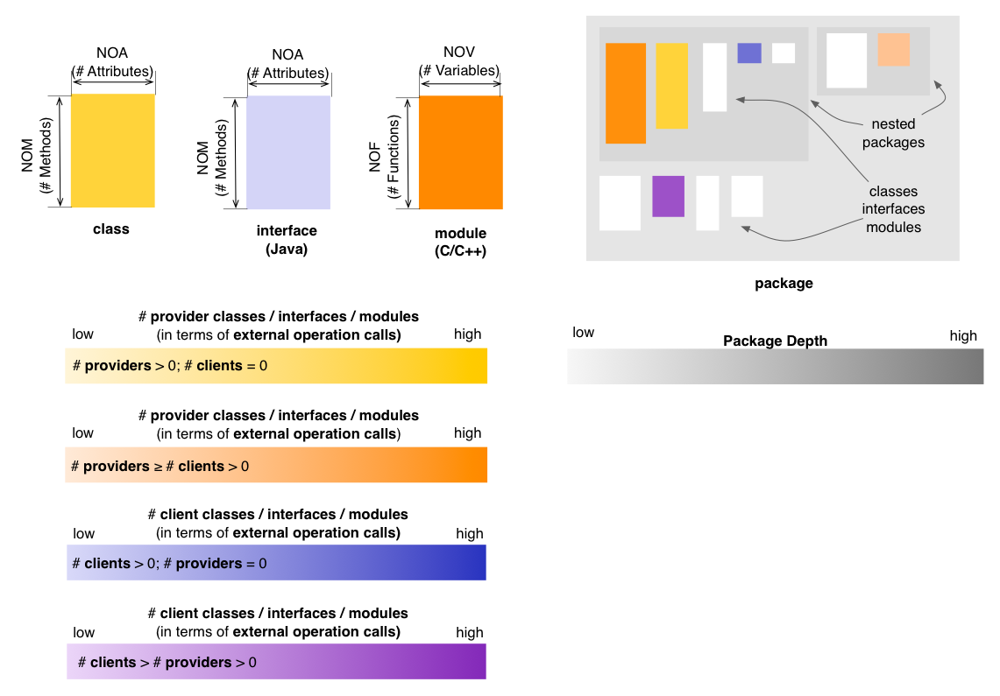
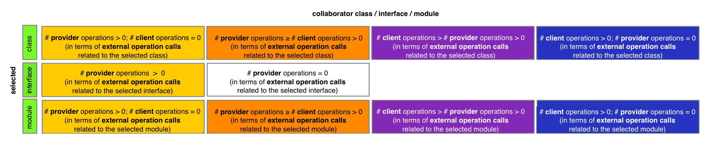

Package Map - Coupling Perspective
The Coupling Perspective of the Package Map
provides insight into the coupling that exists between classes,
interfaces (Java), and modules (C
and C++). In the default state,
the Coupling Perspective will render classes, interfaces, and modules based on
their predominant nature from the viewpoint of operation calls, using
four color gradients:
- if a class or module only calls other operations but none of its
operations are called (i.e. it is a
pure client), it is rendered in a shade of yellow
- if a class or module both calls and its operations are called by
other operations it will be rendered in
a color that depends on which aspect is predominant (i.e. mostly client
shown in a shade of orange, or mostly provider shown in a shade
of magenta)
- if a class, interface, or module has its operations called by
other operations and does not call other operations (i.e. it is a
pure provider), it is shown in a shade of blue

Entity selection
The user may select a class, an interface or a module in the map, in
which case the coloring of the map changes to reflect the coupling from
the point of view of the selcted entity. The selected entity is colored
in green (with no borders). Its collaborator classes or modules are colored using
the four colors described below, based on their relation to
the selected class, interface or module. In case of the Coupling
Perspective, this relation is defined in terms of external operation
calls. If a class, interface, or module has no relation to the
selected entity, its coloring will be disabled.

Other quality perspectives
Complexity, Design Flaws, Encapsulation
Metrics used
NOA, NOF, NOM,
NOV